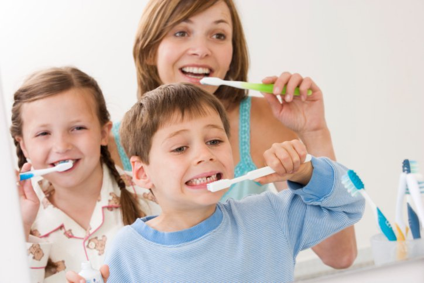
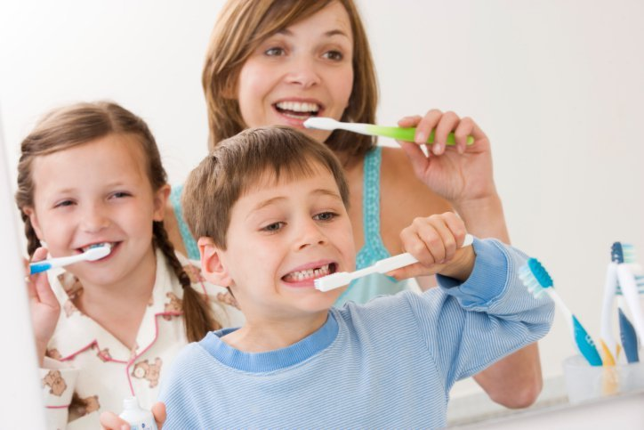
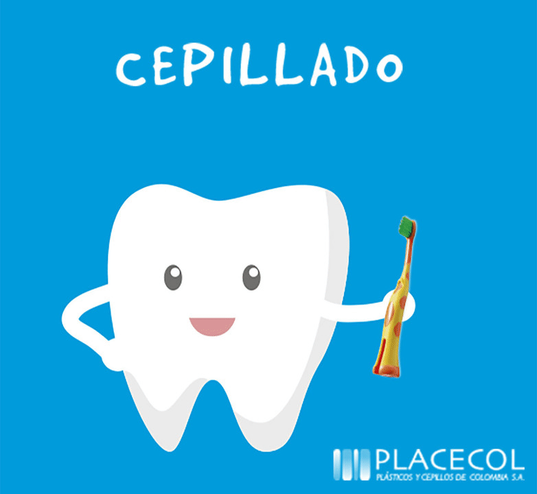
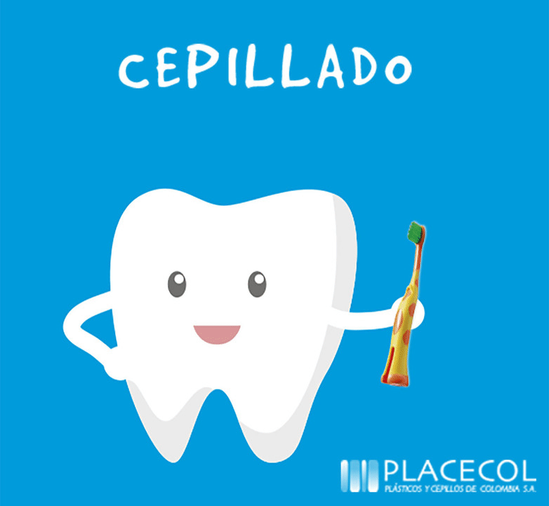

 

La higiene oral se refiere al conjunto de prácticas que realizamos para mantener nuestra boca limpia y saludable. Estas prácticas incluyen:
Es fundamental cepillar nuestros dientes al menos dos veces al día, preferiblemente después de las comidas. Utiliza un cepillo de cerdas suaves y pasta dental con flúor. No olvides cepillar también la lengua y las encías.
El hilo dental ayuda a eliminar los restos de comida y la placa bacteriana entre los dientes y en las áreas donde el cepillo no llega. Utilízalo al menos una vez al día.
Los enjuagues bucales con flúor o antisépticos pueden ayudar a reducir las bacterias y mantener el aliento fresco.
Acude al dentista al menos dos veces al año para una limpieza profesional y una revisión general. Esto ayuda a detectar problemas tempranos y prevenir enfermedades bucales.